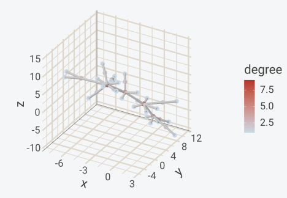
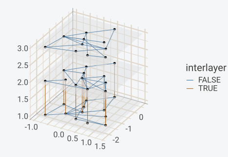
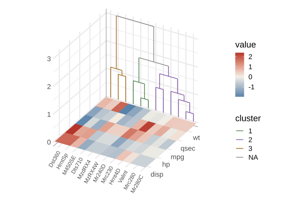

A network drawn in three dimensions has room to separate nodes that a flat layout would pile together, and a third axis can carry a layer or a level of a hierarchy. This article draws an igraph network from a 3D layout, a multilayer network on stacked planes, and a dendrogram standing upright on the edge of a heat map. Installation is covered in Get started; the network examples need igraph.
Pass an igraph object to
ggplot()with a three-dimensional layout.Draw it with
geom_edge_3d()andgeom_node_3d().Stack layers with
stat_layers_3d(), or stand a tree on a plane withstat_dendrogram_3d().
A network from igraph
ggplot() accepts an igraph graph directly. The
layout argument takes a matrix of node positions with three
columns, here a force-directed layout computed in three dimensions;
fortify() turns the graph into node and edge tables that
geom_node_3d() and geom_edge_3d() read.
set.seed(2)
g <- igraph::sample_pa(40, directed = FALSE)
ggplot(g, layout = igraph::layout_with_fr(g, dim = 3)) +
geom_edge_3d(colour = "grey55") +
geom_node_3d(colour = "#2E6F9E", size = 2) +
coord_3d()
The preferential-attachment graph grows by linking new nodes to well-connected ones, so a few hubs collect most of the edges. Mapping the node degree to colour and drawing the edges as tubes makes them easier to find.
ggplot(g, layout = igraph::layout_with_fr(g, dim = 3)) +
geom_edge_3d(shape = "tube", colour = "grey70") +
geom_node_3d(aes(colour = igraph::degree(g)), size = 2.5) +
scale_colour_gradient(low = "#C9D9E6", high = "#B5342B", name = "degree") +
coord_3d()
shape = "arc" bends each edge with a given curvature,
which separates edges that would otherwise overlap.
Multilayer networks
A multilayer network has the same nodes in several layers, such as
one layer per kind of relation, and coupling edges that join a node to
itself across layers. stat_layers_3d() reads an edge list
with from, to, layer and
layer_end and draws one plane per layer. Three random
layers of twelve nodes are coupled here between layers a and b.
set.seed(3)
within <- do.call(rbind, lapply(c("a", "b", "c"), function(l) {
e <- igraph::as_edgelist(igraph::sample_gnp(12, 0.25))
data.frame(from = e[, 1], to = e[, 2], layer = l, layer_end = l)
}))
couplings <- data.frame(from = 1:12, to = 1:12, layer = "a", layer_end = "b")
edges <- rbind(within, couplings)Three calls draw the planes, the edges coloured by whether they stay within a layer, and the nodes (De Domenico, Porter and Arenas 2015).
ggplot(edges, aes(from = from, to = to, layer = layer, layer_end = layer_end)) +
stat_layers_3d(what = "planes", fill = "grey85", alpha = 0.4) +
stat_layers_3d(aes(colour = after_stat(interlayer))) +
stat_layers_3d(what = "nodes", size = 1.5) +
scale_colour_manual(values = c("#2E6F9E", "#9E5E0F")) +
coord_3d()
Dendrograms beside a heat map
A clustered heat map orders its rows by a hierarchical clustering.
stat_dendrogram_3d() draws the tree from an
hclust result on a plane of the panel box, so it can stand
upright along the edge of a flat geom_tile() heat map. The
cars below are clustered on five standardised measurements and ordered
as the tree leaves them, and labelled by abbreviated model names.
m <- as.matrix(scale(mtcars[1:12, c("mpg", "hp", "wt", "qsec", "disp")]))
rows <- stats::hclust(stats::dist(m))
cells <- data.frame(
car = factor(rep(abbreviate(rownames(m), 6), ncol(m)),
levels = abbreviate(rownames(m), 6)[rows$order]),
variable = rep(colnames(m), each = nrow(m)), value = as.vector(m))plane = "xz" stands the tree on the back wall above the
car axis, height sets its range in z, and
k = 3 cuts it into three clusters that
after_stat(cluster) colours (de Vries and Ripley 2024).
ggplot(cells, aes(car, variable)) +
geom_tile(aes(fill = value)) +
stat_dendrogram_3d(aes(colour = after_stat(cluster)), hclust = rows,
plane = "xz", height = c(0, 3), k = 3, linewidth = 0.6) +
scale_fill_gradient2(low = "#2E6F9E", mid = "#F2EFE6", high = "#B5342B") +
scale_colour_manual(values = c("#3F7A3D", "#7A4F9E", "#9E5E0F")) +
labs(x = NULL, y = NULL) +
coord_3d(elevation = 30)
geom_tile() is the ggplot2 layer; inside
coord_3d() it lies on the floor of the box.
Where next
Curved spaces and spacetime lays out large trees in hyperbolic space.
Molecular ball-and-stick views draws bonds as edges between atoms.
References
De Domenico, M., Porter, M. A. and Arenas, A. (2015). MuxViz: a tool for multilayer analysis and visualization of networks. Journal of Complex Networks 3, 159-176. https://doi.org/10.1093/comnet/cnu038
de Vries, A. and Ripley, B. D. (2024). ggdendro: create dendrograms and tree diagrams using ggplot2. https://CRAN.R-project.org/package=ggdendro